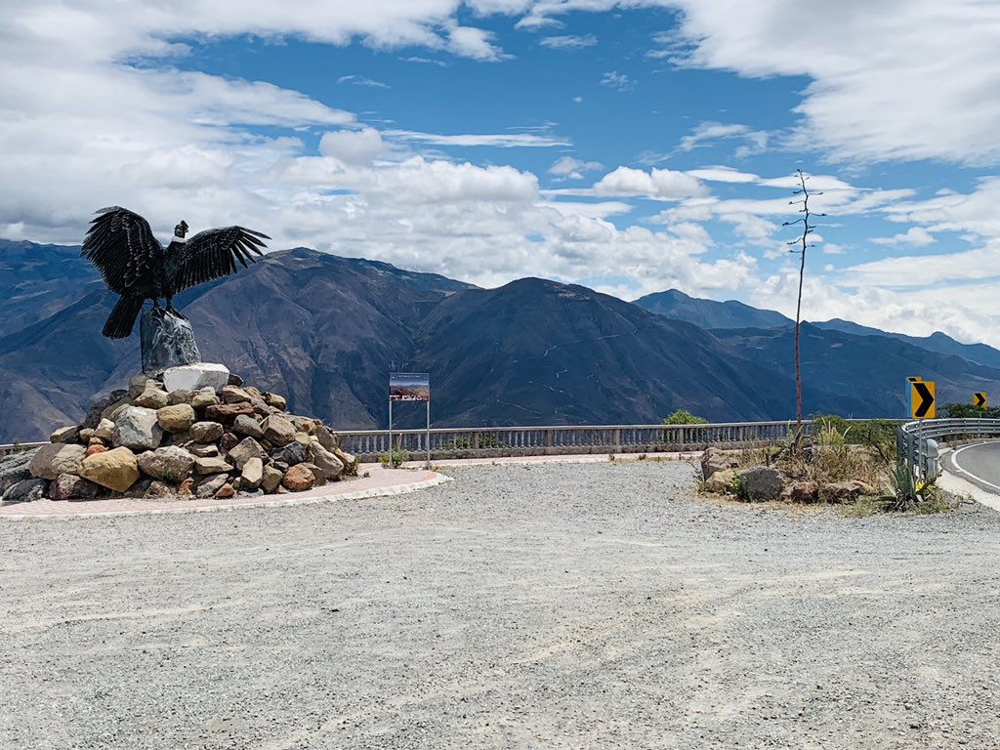

CANTONES
“Hablar de la Provincia del Carchi, es conocer la magia de la gente, donde usted encontrará la solidaridad, la amistad y por sobre todas las cosas, la bondad de un pueblo, que nació del pueblo Pasto. En el Carchi empieza y termina la Patria Ecuatoriana, es la puerta de entrada para el Turismo y el Comercio.”

Ciudad de Tulcán

Los parques más importantes, y que conforman el centro de la ciudad, son : Parque Isidro Ayora y Parque de la Independencia (Parque central). Alrededor de estos dos parques se encuentran las instituciones más importantes de la ciudad. Circundan al Parque central los edificios del Municipio, Gobernación, Seguro Social, bancos, una universidad, entre otras. Alrededor del parque Isidro Ayora hay edificaciones de comerciantes particulares. Esta ciudad, por ser fronteriza, goza de un buen movimiento comercial, la actividad más importante de la zona, de la cual se sustenta la ciudad. Otros parques menores pero tradicionales son La Concordia, Julián Andrade y Del Civismo. El deporte también es privilegiado en esta ciudad pues cuenta con infraestructura acorde a las necesidades de la población; cuenta con coliseos cubiertos, estadios, pista atlética, piscinas semi-olímpicas, pistas de bicicrós, un velódromo y patinódromo.
CEMENTERIO DE TULCÁN
Es una de las realizaciones técnicas mejor acabadas, sus delicadas y bien formadas esculturas talladas en ciprés lo vuelven un espacio imprescindible para la meditación y contemplación. Este museo infinito de silencio de significativa belleza ha sido reconocido a nivel nacional y mundial. Sus figuras tienen variadas formas representativas de la flora y fauna del Ecuador y de las culturas romanas, griega, inca, azteca y egipcia, divididas en dos zonas: la primera ubicada en la parte frontal del cementerio, conocida como “Parque de los Recuerdos” y la segunda ubicada en la parte posterior, bautizada con el nombre de “Altar de Dios”. Sus primeros árboles fueron sembrados por Don José María Azael Franco Guerrero, cuando ocupaba el cargo de Jefe de Parques del Municipio de Tulcán; la tierra calcárea del lugar favoreció el implante del ciprés, en donde a partir del décimo año de vida de cada árbol, fueron conformándose las figuras de acuerdo a los ideales e imaginación del autor. El 28 de mayo de 1984, la obra fue declarada Patrimonio Cultural de la Nación, siendo el continuador de esta arquitectura el hijo del creador, Benigno Salvador Franco Carranco, quien ayudó desde su infancia a su padre en los trabajos de ornamentación.
BALNEARIO EL AGUACATE
Su nombre se debe a la existencia de plantas de aguacate, sitio de recreación debido al poder medicinal de sus aguas. Apto para la práctica de deporte al aire libre, excursiones y paseos familiares.
VALLE DEL RIO CHOTA
El Valle del Chota conocido como “El rincón de áfrica del Ecuador” se ubica entre las provincias de Carchi e Imbabura. Las comunidades de Ambuqui, Chalguayacu, Juncal, Carpuela, estación Carchi y Ponce comprenden este valle ubicado en Los Andes ecuatorianos. Este destino posee varios atractivos turísticos y su gente mantiene costumbres ancestrales que atraen a los viajeros del mundo y Ecuador. Esta zona turística cuenta con una variada oferta de alojamiento, alimentación y recreación. La música y el baile al compás de la bomba, el tambor y otros instrumentos son su principal atractivo. Los viajeros pueden realizar turismo comunitario con los habitantes para conocer de cerca la cultura afroecuatoriana.
PARQUE DE LA MEGA-FAUNA
Un museo paleontológico, con fósiles descubiertos por científicos italianos, podrán ser admirados en el cantón Bolívar, provincia del Carchi, en el ‘Parque de la Megafauna’. La construcción se compone de dos elementos, la primera es un recorrido por un parque temático que contiene esculturas de animales de la era cuaternaria, como mastodontes, milodontes, mamuts, armadillos gigantes, tigres dientes de sable, caballos salvajes, entre otros, además de homínidos, que habitaron la tierra hace 2 millones de años. La otra es el nuevo edificio del museo, que antes funcionaba en la planta baja del Municipio de Bolívar (Provincia del Carchi), y que albergará huesos fósiles, tales como colmillos, vértebras, costillas, caderas, fragmentos de árboles petrificados, entre otros, que fueron descubiertos en 1984 por científicos italianos.
RESERVA ECOLOGICA EL ANGEL
La Reserva Ecológica El Ángel (REEA), es un área natural protegida localizada en el norte de Ecuador, provincia de Carchi, en las parroquias La Libertad y El Ángel del cantón Espejo. Posee una extensión de 1654 hectáreas, abarcando altitudes que van desde los 3400 hasta los 4200 msnm, con suelos que retienen una gran cantidad de agua, por lo que es considerada como una verdadera "esponja" que abastece del líquido vital a toda la provincia del Carchi. Fue declarada Reserva nacional de Conservación Ecológica desde el año 1986. La Reserva Ecológica fue establecida en 1992 e incluida dentro de las 56 áreas sobresalientes del Sistema Ecuatoriano de Áreas Protegidas, para conservar principalmente páramos de frailejón. Comprende la mayor parte de la cordillera occidental en la provincia de Carchi, y colinda hacia el oeste con el área conformada por la Reserva Étnica Awá. Fue declarada sitio Ramsar en 2012
BOSQUE POLYLEPIS
Es un bosque que ocupa la zona de amortiguamiento de la Reserva Ecológica El Ángel, ubicado al noroeste de la ciudad del El Ángel. Tiene una extensión de 12 has. de bosque primario y milenario de polylepis. Existen aproximadamente 40 árboles en 500 m2, cabe resalta que es un relicto de bosque muy antiguo. El polylepis alcanza los 15 metros de altura, otros árboles que habitan en este lugar alcanzan los 3 o 4m de altura debido a que este es un bosque dominante por lo que cubre con las copas los espacios existentes impidiendo el crecimiento de otras especies. El bosque de Polylepis, es calificado como un bosque jerárquico – primario – milenario, considerado único en su género por la exclusividad de la especie, la cual se ha desarrollado en un valle de origen glaciar de la era cuaternaria (pleistoceno), con una antigüedad entre 2 y 4 millones de años, se encuentra como especie dominante en el dosel el arrayán y sotobosque conformado por puma maqui, encinos, pandala , uvilla , orquideas, huicundo entre otros..
MIRADOR EL CONDOR
Se encuentra coronando en un mirador natural que permite apreciar todo el valle de Salinas y parte de la cuenca del Río Mira, en el se aprecian cóndores andinos sobrevolando la inmensidad de la zona.
GRUTA DE LA PAZ
Sin ninguna duda este maravilloso lugar, es uno de los sitios más representativos religiosos del Cantón Montúfar. La Gruta de la Paz es única, ubicada a 18 Km de San Gabriel y 2468 msnm. Es una formación natural rocosa. Su interior está formado por estalactitas y estalagmitas. Por sus entrañas se abre paso el Río Apaquí. Debido a su formación, la gruta presenta constante filtración de agua posiblemente por influencia de pequeñas fuentes subterráneas, que se escurren a través de las estalactitas. Los suelos son mollisoles C4 que se encuentran en la parte baja de las vertientes de contacto hacia el callejón interandino, son poco profundos, erosionados sobre una capa dura cementada denominada Cangahua a menos de 1 mt. de profundidad. La formación geológica de este lugar es del período cuaternario plioceno con piroclastos primarios compuestos por tefra, flujos piro clásticos igmimbritas y en los trabajados compuestos por Cangahua producto de las avalanchas de escombros, lahares y flujos de lava.
BOSQUE DE LOS ARRAYANES
Localizado a 11 Km. de San Gabriel, sitio favorito para los amantes del Ecoturismo, bosque con una extensión de 10 has de la especie arrayán, árbol de tronco rojizo y espeso follaje, las copas forman una bóveda en el se puede respirar un ambiente de paz y tranquilidad este sitio es conocido como “La Catedral”.
VIRGEN DE HUACA
Los parques más importantes, y que conforman el centro de la ciudad, son : Parque Isidro Ayora y Parque de la Independencia (Parque central). Alrededor de estos dos parques se encuentran las instituciones más importantes de la ciudad. Circundan al Parque central los edificios del Municipio, Gobernación, Seguro Social, bancos, una universidad, entre otras. Alrededor del parque Isidro Ayora hay edificaciones de comerciantes particulares. Esta ciudad, por ser fronteriza, goza de un buen movimiento comercial, la actividad más importante de la zona, de la cual se sustenta la ciudad. Otros parques menores pero tradicionales son La Concordia, Julián Andrade y Del Civismo. El deporte también es privilegiado en esta ciudad pues cuenta con infraestructura acorde a las necesidades de la población; cuenta con coliseos cubiertos, estadios, pista atlética, piscinas semi-olímpicas, pistas de bicicrós, un velódromo y patinódromo.